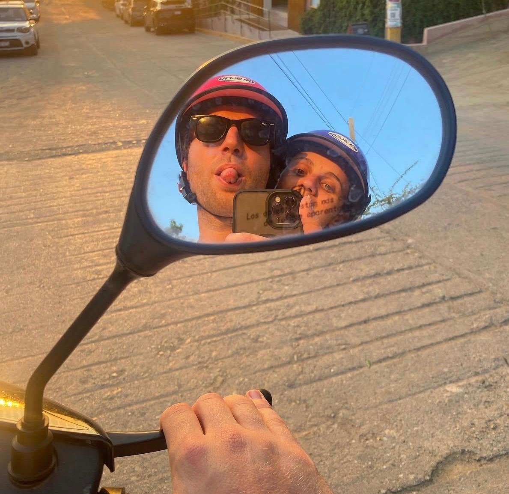

Transporte

Servicio de autobuses
Ponemos a vuestra disposición un servicio de autobuses para que podáis disfrutar del día sin preocupaciones.
El número de autobuses y los horarios son meramente orientativos, el horario está aún por definir.
Pobla de Farnals → Monasterio ▾
Salida: ESTIMAR Marina Farnals
- 12:00 — Ida al monasterio
Valencia → Monasterio ▾
Puntos de recogida: Torres de Quart y Porta de la Mar
- 11:45 — Torres de Quart
- 12:00 — Porta de la Mar
Los autobuses recogerán y dejarán desde las Torres de Quart y desde la Porta de la Mar.
Monasterio → Finca ▾
Traslado del monasterio al lugar de la celebración
- 14:00 — Salida hacia la finca
Finca → Pobla de Farnals ▾
Vuelta al hotel ESTIMAR Marina Farnals
- 22:00 — Salida de la finca
- 00:00 — Salida de la finca
Finca → Valencia ▾
Puntos de bajada: Porta de la Mar y Torres de Quart
- 22:00 — Salida de la finca
- 00:00 — Salida de la finca
Los autobuses dejarán en las Torres de Quart y en la Porta de la Mar.
Parking
Hay parking disponible tanto en el monasterio como en la finca de celebración.